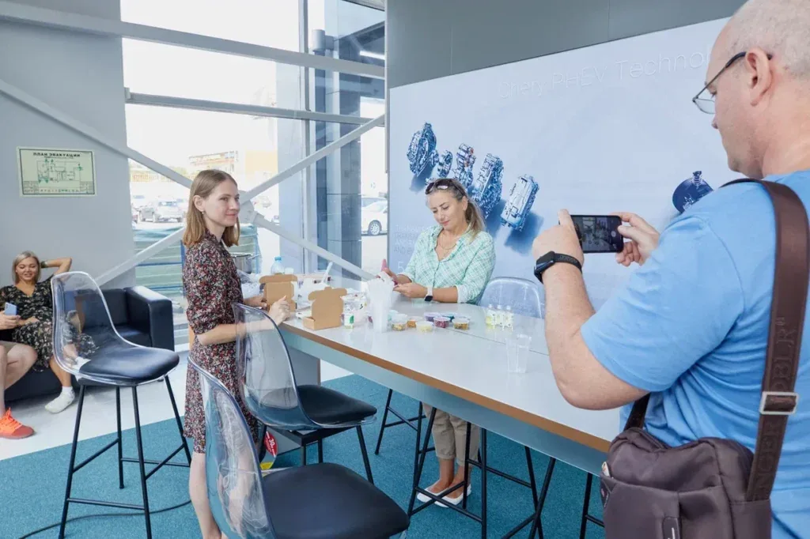
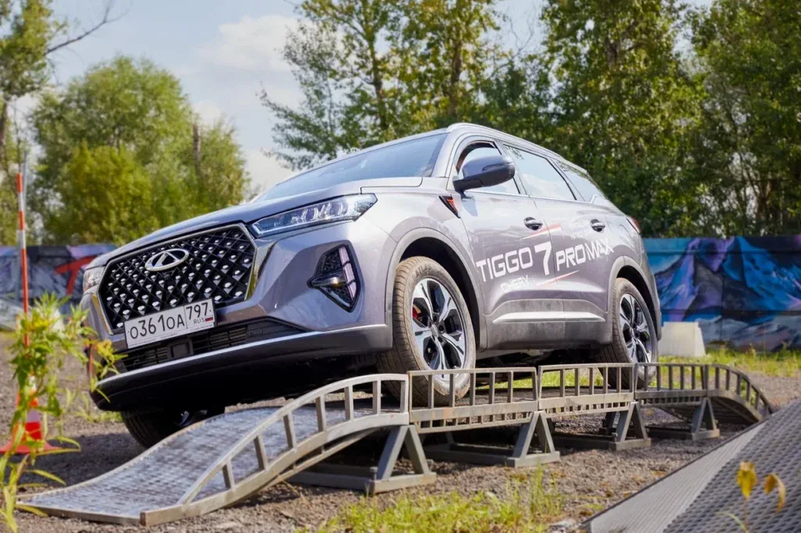
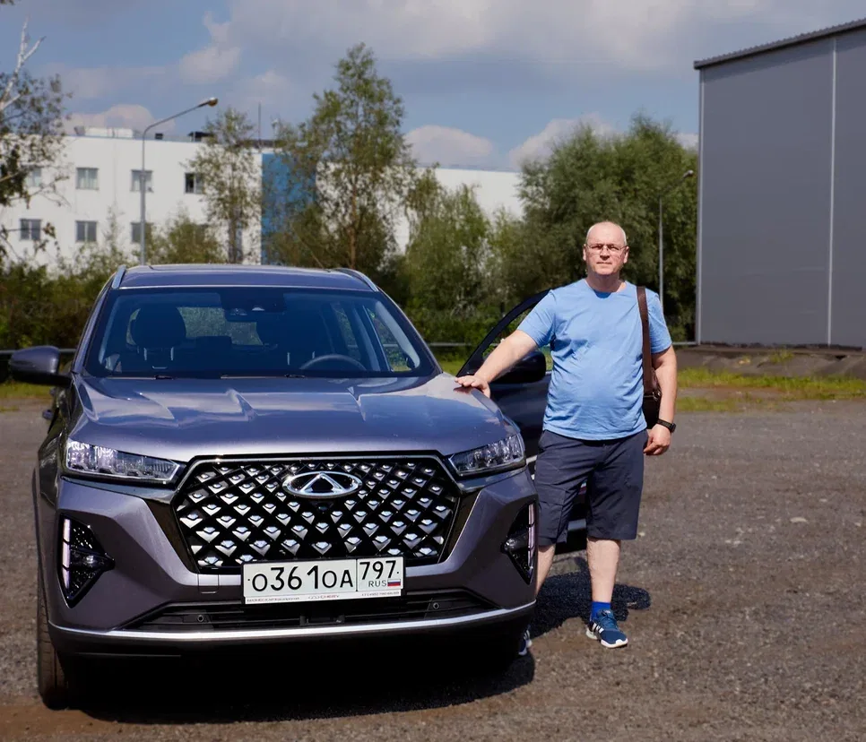
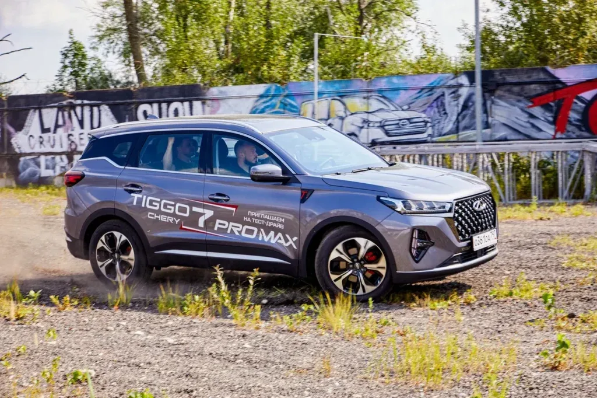
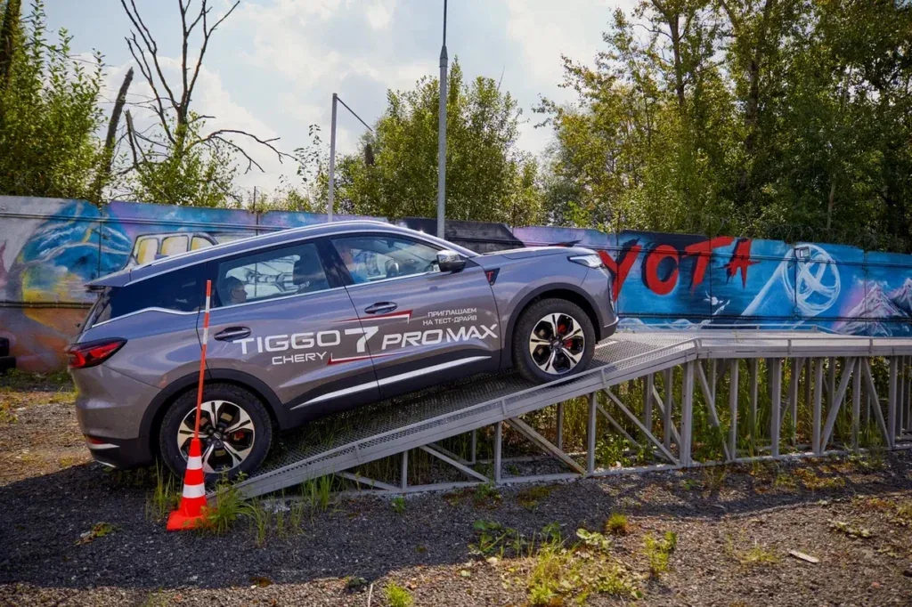
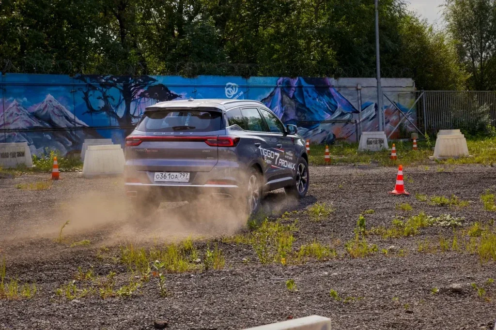
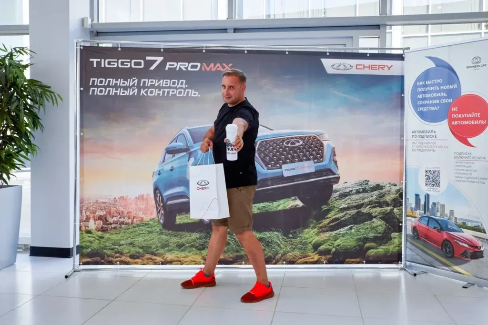
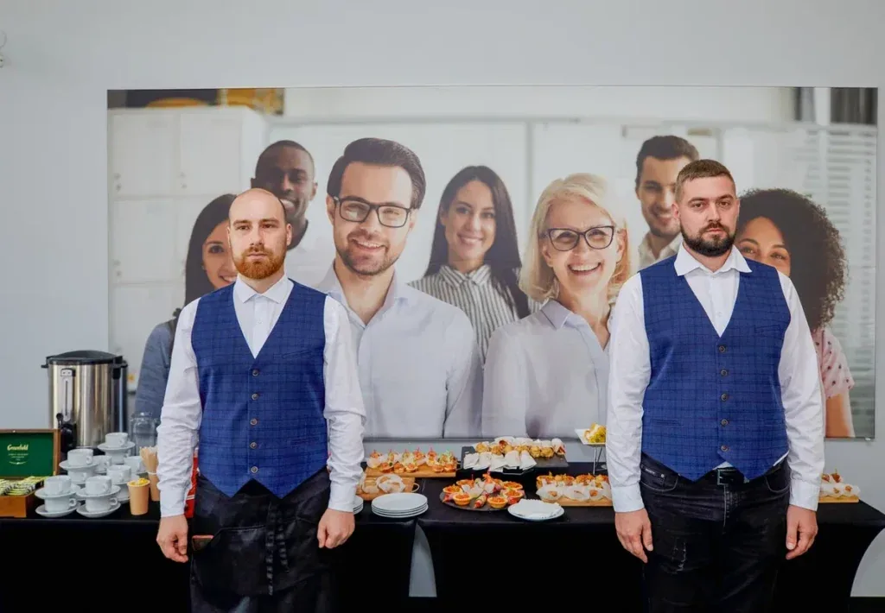

ИНТЕРАКТИВ
Время переключиться
Пока одна группа находилась на маршруте, остальные гости могли спокойно провести время на площадке. Небольшие активности поддерживали ритм события без ощущения ожидания.

TIGGO 7 PRO MAX / TEST DRIVE
Выездное клиентское событие, где презентация нового TIGGO 7 PRO MAX продолжалась за рулём — на реальной трассе, в живом общении и в атмосфере летнего загородного дня.
Новый TIGGO 7 PRO MAX должен был раскрыться не через набор характеристик, а через личный опыт. Для гостя важнее всего момент, когда он закрывает дверь, берётся за руль и сам понимает, как автомобиль ведёт себя в реальных условиях.
Поэтому событие мы строили вокруг движения: знакомство с моделью, комфортная загородная площадка, тестовая трасса и время для спокойного общения после заезда.
Тест-драйв легко превратить в техническую процедуру: регистрация, ключи, маршрут, возврат автомобиля. Наша задача была обратной — встроить поездку в цельный сценарий события.
Чтобы гость запомнил не только модель, но и весь день вокруг неё.
На площадке автомобиль можно было увидеть в статике, но главный продуктовый опыт начинался за её пределами: подъёмы, спуски, неровное покрытие и короткие динамические участки давали почувствовать поведение кроссовера в разных режимах.




ИНТЕРАКТИВ
Пока одна группа находилась на маршруте, остальные гости могли спокойно провести время на площадке. Небольшие активности поддерживали ритм события без ощущения ожидания.

BRAND TOUCHPOINT
Фирменная зона, подарки и фотографии становились последней точкой контакта — уже после того, как человек получил собственное впечатление от автомобиля.
TIGGO 7 PRO MAX к этому моменту уже стал массовой моделью для российского рынка. В коммуникации вокруг обновлённого кроссовера CHERY отдельно делала акцент на практичности, безопасности и ресурсе автомобиля.
Параллельно бренд заявлял о публичных ресурсных испытаниях силового агрегата с участием представителей Книги Рекордов России. Для события это задавало правильный контекст: продукт важно было показать не «на витрине», а в действии.

SPA-отель Imperial стал естественной базой для такого формата. Мы давно работаем с площадкой и знаем её возможности: здесь легко совместить активную автомобильную часть и спокойную гостевую среду.
В результате день не распадался на «презентацию» и «тест-драйв». У гостей оставалось пространство для общения, отдыха и обмена впечатлениями сразу после маршрута.
Связали презентационную, гостевую и тестовую части в последовательный путь участника.
Организовали работу на знакомой загородной площадке и координацию зон мероприятия.
Встроили автомобильный опыт в программу так, чтобы движение стало главным доказательством продукта.
Поддержали ожидание и общение через активности, hospitality и брендированные точки контакта.
Главный результат такого формата нельзя свести к красивой статичной презентации. Гости увидели модель, испытали её на маршруте и получили время сформировать собственное впечатление — именно тот тип контакта, который особенно важен для автомобильного бренда.
NEXT CASE
BMW × AVILON